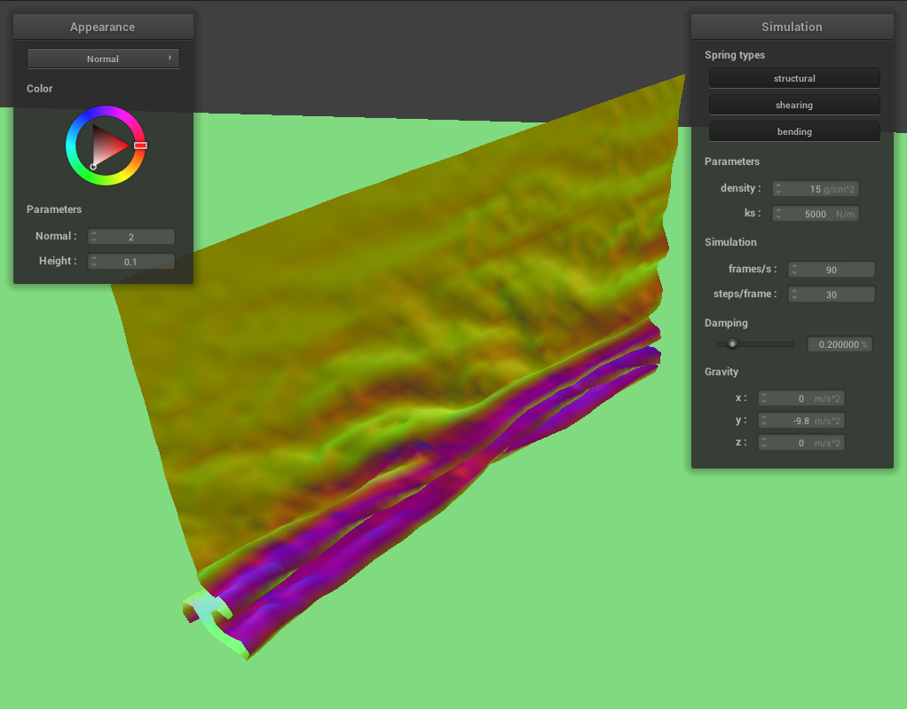
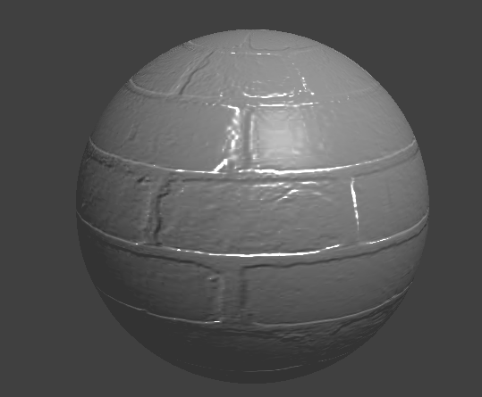

CS184/284A Spring 2025 Homework 4 Write-Up
Link to webpage: https://cal-cs184-student.github.io/hw-webpages-drsigma/hw4/index.html
Link to GitHub repository: https://github.com/cal-cs184-student/sp25-hw4-jellytea.git
Overview
This homework gives an overview of multiple important concepts used in computer graphics through a cloth simulation example. First we implement the animated simulation using Velet integration to calculate the next state, then collision checks with other objects as well as between the point masses making up the cloth itself are considered. While the collisions here do not carry physical meaning, the result is a realistic simulation of cloth falling onto various objects under the effect of gravity. Finally, we implemented a series of different shader programs as practice.
Part 1: Masses and springs
In this part, we first create a grid of point masses that are connected with springs. To do that, we first loop through the indices of the grid in the x and y (or z, depeneding on the orientation of the cloth). A point mass has coordinates of \((x,y=1,z)\) if the cloth is horizontal and \((x,y,-\frac{1}{1000}\leq z \leq\frac{1}{1000})\) if it's horizontal. The corrdinates are determined by evenly distributing the desired number of point masses along each direction into a uniform grid.
After all point masses are created, we follow the following rules to create the three types of constrarints.
- Structural: one to the left, one to the top
- Shearing: one to the upper left, one to the upper right
- Bending: two to the left, two to the top
In order to add all the relevant constraints, we simply need to loop through all the created point masses again and check to see if each of these 6 neighbours used to create the relationships are valid indices. For instance, for a point mass with index \((i,j)\), its upper right diagonal neighour has index \((i+1,j-1)\). As long as each neighbor is valid, we create the corresponding constraint and append it to the list of springs in the cloth. As a result, the following images show the created cloth model. Since both Structural and bending create constraints in the same directions, it is hard to distinguish them in the GUI. However, the correct shearing constraint can be varified by enabling only that type, as shown below.
|
|
|
|
Part 2: Simulation via numerical integration
After constructing the components that make up the simulated cloth, we can simulate its motion using first principles and Verlet integration. First, we need to compute the total force acting on each point mass to get the acceleration. To do this we first loop through each point mass again and update the force on each one by adding the force caused by external acceleration. Then we loop through each spring to add the equal and opposite spring forces to the two masses connected to each spring. The magnitude of the spring force is given by \(F_s = k_s(||p_a-p_b||-l)\) where \(k_s\) is the spring constant, \(l\) is the rest length of the spring, and \(p_a\) and \(p_b\) denote the positions of the two masses.
Next, we use Verlet integration to update the postiions of the point masses in the next time step. This follows the equation \[x_{t+dt} = x_t + (1-d)(x_t-x_{t-dt}) + a_t dt^2\] For bending constraint, this force is multiplied by another factor of 0.2 to make the constraint force less stiff.
Finally, we add an additional constraint outlined in this paper to keep the simulation realistic dispite the simplicity of the spring model. This is done by capping the displacement of the springs within 110% of its rest length. If at any step the spring length exceeds this value, we force the displacement back by modifying the positions of the two masses. Note that if a point mass is set up as "pinned" in the simulation, we do not update its position in any of these steps.
As a result, we can simulate a realistic cloth under the effect of gravity. The image below shows the cloth simulation with default parameters, with
\(k_s = 5000 N/m\), density of \(15 g/cm^2\), and a damping factor of \(0.2\%\). We also show a comparison below with modified parameters. The spring
constant affects the stiffness of the cloth, so with a small \(k_s\) value the resting pose of the cloth has a lot more creases. Density affects the mass of
each point mass, so it affects the trade-off between the acceleration contributed by the spring forces and gravitational force. A large density means that the spring
less prominent than the gravitational pull, resulting in a lot more sagging in the cloth. Finally, the damping factor affects the movement of the cloth in simulation.
With a very low damping value, the system is underdamped and the cloth swings around a few times before coming to a rest. With a large damping factor, however, the fabric
slowly settles to its rest state.
|
|
|
|
|
|
|
|
|
Finally, we also show the 4-pin cloth simualtion, with \(k_s = 1000 N/m\)
Part 3: Handling collisions with other objects
In part 3, we implement collision with sphere and collision with plane in the cloth simulator. Note that these "collisions" do not really follow any physics rules, we simply code the simulator such that objects do not penetrate each other. This is done by updating the positions of each point mass to corrected locations in case a "collision" takes place after Verlet integration.
A sphere is defined by a center point \(o\) and a radius \(r\). Let \(p\) denote the position of a given point mass. For collision with sphere, we apply the following steps:
- Using the fact that a tangent point is located at \(T = d_{OP}r + O\), where \(d_{OP}\) is a unit vector from point \(O\) to point \(P\), check to see if the point mass at \(P\) is inside the sphere.
- If a collision occurs, we want to update \(P\) to the tangent point \(T\). Based on this, we can compute a correction vector
\(\Delta P = T - P^{-}\) where \(P^{-}\) is the
last_positionstored in the point mass. - Finally, update is performed on the position of the point mass: \(P=P^{-}+\Delta P (1-f)\) where \(f\) is friction.
The function cloth::simulate is also updated accordingly to add in this collision update, which simply overwrites
the position of point masses if needed. As a result, our simulated cloth now falls onto a sphere. By varying the spring constant, we
can see in the following images that as expected, a larger spring constaint makes the cloth look more stiff and therefore drapes down less.
|
|
|
|
Plane collsions are handled using the same logic as sphere collisions, except the collision criteria is different. A plane is defined by a point \(P_0\) and a normal vector \(n\).
- A collsion is assumed to take place if the point mass crosses through the plane in this time step, in other words if \(n\cdot (P^{-}-P_0)\) and \(n\cdot (P-P_0)\) have opposite signs.
- The tangent point on the plane is defined as \(P_t=P-((P-P_0)\cdot n)n\)
- Finally, update is performed on the position of the point mass: \(P=P^{-}+\Delta P (1-f)\) where \(f\) is friction.
- We want to update the point to be a small offset off the tangent point from the side of \(P^{-}\) and based on that we compute the correction vector \(\Delta P\).
- Finally, the same update rule is applied:\(P=P^{-}+\Delta P (1-f)\)
As a result, the cloth now rests on the plane in the simualtion instead of falling through it.
Part 4: Handling self-collisions
Next, we implement self-collsions among the particles making up the cloth. To do this efficiently, we use
a hash map which seperates the 3D space into many boxes, and collision is only checked between each point mass and its
neighbors within the same box. We begin by defining a function hash_position() that takes a point mass’s position and maps it to a unique identifier
based on which spatial box it falls into. by triming the remainer of each point mass' 3D position, we assign them each a key corresponding
to the box that it resides in. To implement the actual self-collision check, we apply the following steps:
- For each neighbor, compute the distance to see if the distance is less than
2*thickness. - If the distance is small, we apply a correction contribution to the position of the point mass.
- The contribution of all neighbor pairs are added and then scaled by a factor of
1/simulation_steps. - This correction is simply applied to the
positionof each point mass.
In the simulator function, we first build the hash map by looping through all point masses, then apply the update. As a result, the following images showcase the implementation of the self-collision. The cloth no longer intersects itself but rather folds itself multiple times on top of the surface.
|
|
|
|
|
|

|
|
We can see from the follwoing images the effect of varying the density and spring constant. The cloth falls down into the rest state with more folds if the density is large or if the spring constant is small. This is likely because a large density causes the point masses to stay in place under the effect of gravity instead of being pulled around by neighbouring particles, and a small spring constant causes less spring forces between the particles, making the cloth harder to flatten itself due to internal force.
|
|
|
|
|
|
|
|
Part 5: Shaders
In this section, we apply many interesting shaders to make the simulation more visually appealing. In essense what I have learned through
this homework is that shader files makes per-vertex and per-fragment comuputations easier. For vertex shader with type .vert,
the operations in the main() function is applied to every vertex. Similarly, in the .frag files this is done to every
fragment. In the vertex shader, we perfromed some per-vertex operations to convert things like position, normal, and uv coordinates into the correct
frame. These outputs are then used in the fragement shaders. The sections below detail a few fragment shaders that we wrote.
Blinn-Phong Shader
Recall that the Blin-Phong model states \[L = k_a I_a + k_d \left(\frac{I}{r^2}\right)max(0,n\cdot l)+ k_s \left(\frac{I}{r^2}\right)max(0,n\cdot h)^p\] which is a weighted sum of the ambient, diffuse, and specular lighting. Properties like the position of camera, light, and ligth intensity are given as uniforms in the shader file, and we can easily compute the relevant vectors such as the bisector \(h\), view direction \(v\), and the normal vector. In addition to these, we define some parameters for the Blinn-Phong shader to work well. Here \(I_a = [2~2~2]^T\), \(k_d = 0.6\), \(k_s = 0.3\), \(k_a = 0.1\), \(p = 50\). The resulting cloth simulation with Blinn-Phong shading and each individual component is shown in the following images.

|
|
|
|
Texture shader is easy to write, since we do not need to do any computation for the color of a given uv coordinates, instead we just read the color off the texture. Below is an image of the cloth with custom-chosen texture.
Next, we applied bump and displacement mapping. We modify the direction of the normals slighly in bump mapping accordint to the r channel of the input texture. As a result, the change in normals affect the Blinn-Phong shading results, allowing the rendering to have more textured appearences. Displacement mapping also modifies the vertex positions of the actual model, and it does it in a way that is consistent with the input texture. As shown in the images below, displacement shader differs from bump shader since it modifies the shape of the sphere.
|
|

|

|
Additionally, we note that since bump shader does not modify the underlying geometry of the object, the appearance due to bump shader is unaffected by the resolution of the mesh. However, displacement shader benefits from a finer mesh, leading to more realistic rendering with richer textured mesh.
|
|
|
|
|
|
Finally, we also implement a mirror shader which makes the rendered surface appear like a mirror material reflecting the enviornment, which is encoded using the input texture. This is done by sampling the texture using the reflected ray instead of the ray along the view direction.
|
|
|